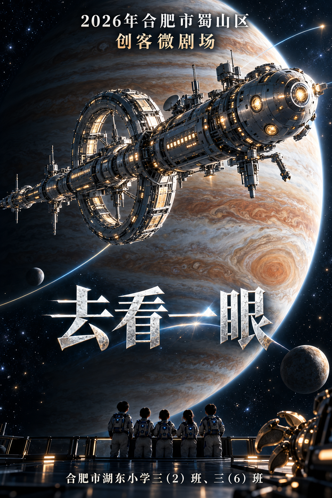
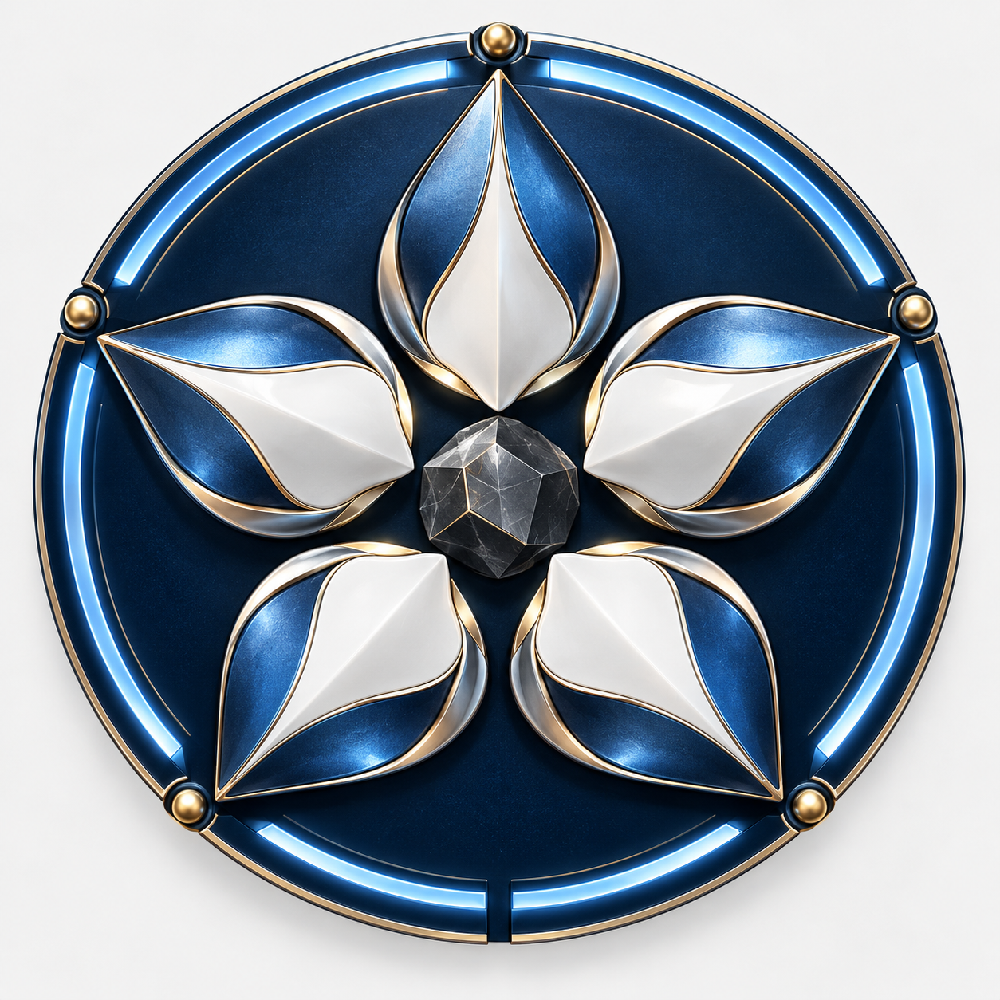
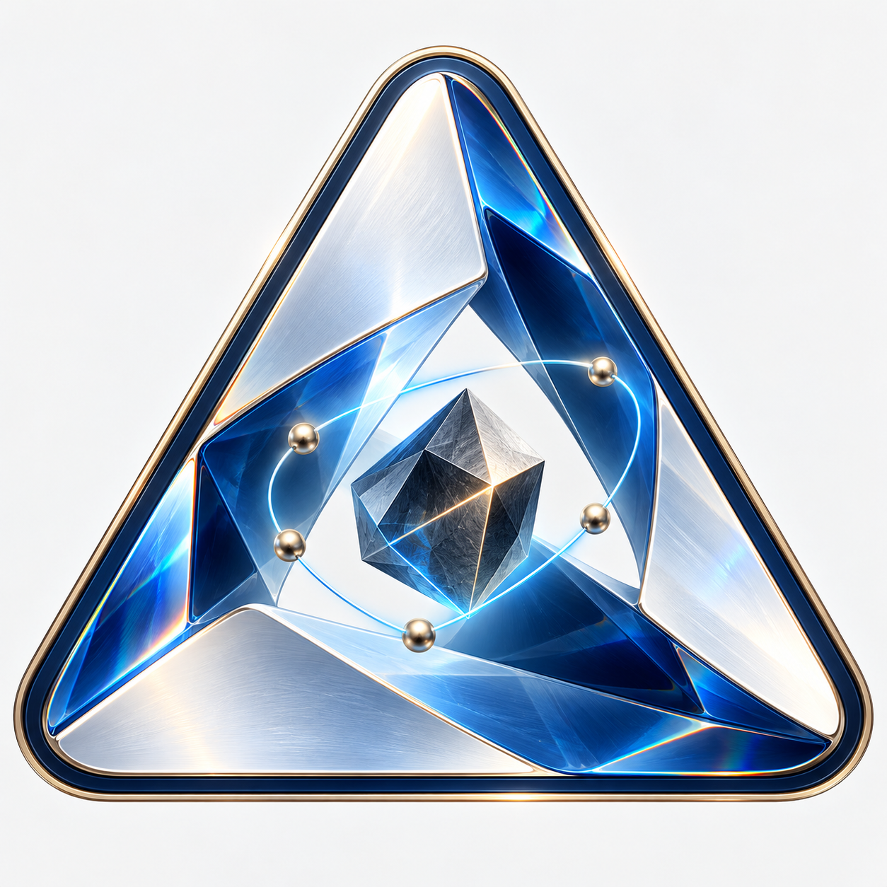

大飞船 × 木星引力辅助 · 艺术与科技感队徽
点击图片查看原图。第一轮候选仍保留。

放大飞船主体，木星背景、开放式引力辅助示意航迹与五人背影；保留活动标题、作品名和完整学校信息。

五片金属陶瓷花瓣、中央岩石与五个节点，呼应五位成员与五瓣抓手。

三角镜面舱、蓝玻璃折射、金属边框与五个节点。
圆形舷窗、温和眼睛、岩石瞳孔与飞船航迹的融合。
全部使用imagegen生成；完整提示词与生成记录保存在本目录。